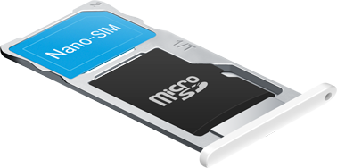
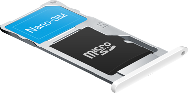

魅蓝 note2 延续了多彩配色风格，并首次引入魅族 MX 系列的金属灰配色，深邃，且富有质感。魅蓝 note2 适于年轻个性，也完美契合轻熟商务。仅 149g 的重量，薄至 8.7mm 的厚度，更性感的 R 角弧度让单手握持毫无繁重。
更为成熟的一体化成型工艺被运用于魅蓝 note2 上。外部聚碳酸酯材质后盖包裹着内里的镁合金骨架，温润手感与坚实结构均完美继承。mBack 键首次出现在魅蓝系列，经 CNC 精加工后的铝合金按键加固环，视觉冲击与金属质感更强烈。
5.5 英寸 1080P Full HD 屏幕，IGZO 显示技术可让每台手机都有高度统一的出色表现，也具备绝佳的低功耗特性。403PPI 带来细腻的视觉体验，对比度高达 1000：1。屏幕亮度则为 450cd/m²，户外强光下依旧清晰可见。GFF 全贴合，避免反光影响，屏显透彻。

新一代 64 位 MT6753 处理器，八颗 A53 架构核心可根据具体使用场景进行智能调配。灵活兼顾高性能大型游戏与日常轻度使用，无需习惯「斤斤计较」的电量规划。图形处理器为三核心 64 位 Mali T720，视频播放画面顺滑流畅。

不再受限硬件，支持 TD-LTE 与 FDD-LTE 双 4G 制式，无缝切换中国移动中国联通。单卡槽双 Nano-SIM 卡位简洁机身设计，主卡位还可复用兼容最大 128GB 内存卡扩展。*公开版可支持中国移动中国联通双 4G
 

魅蓝 note2 主摄像头沿用专业的三星 1300 万像素 CMOS，成像锐利细节丰富。双色温双闪光灯，暗光环境下白平衡精准自然。零延时快门拍照，生活每一瞬息皆为永恒。前置 500 万像素配合升级过的 FotoNation 智能美颜算法，按下快门的瞬间，系统即可完成美肤调亮，静待分享社交圈。
电池典型值容量为 3100mAh，在同等价位实属少见。采购高成本的 SONY/ATL 等电芯，只因安全耐用。

Android 5.1 的优秀特性需结合 64 位处理器才能最大化释放。在全新的 Flyme 4.5 系统上，可切实感受到最先进的 Android 内存管控机制与电池续航控制。